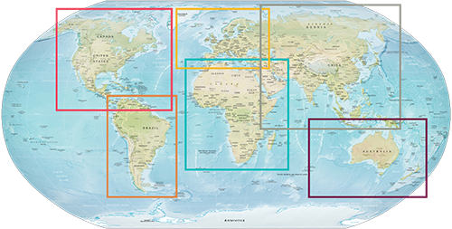
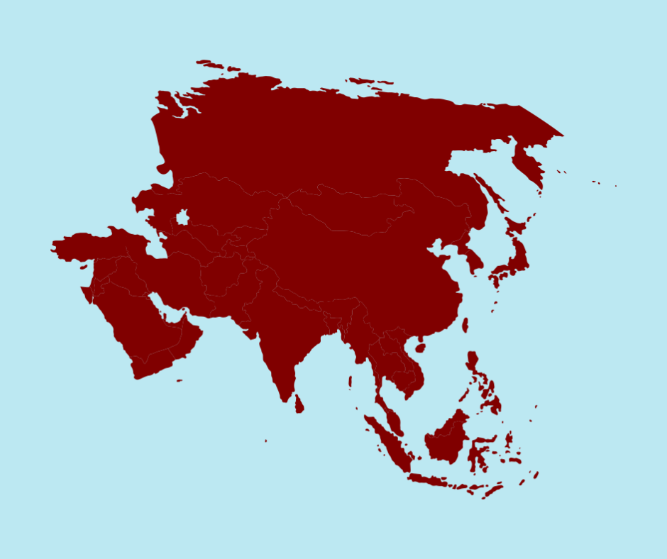
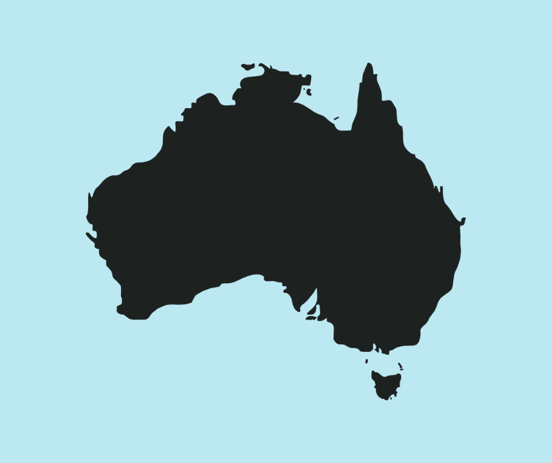
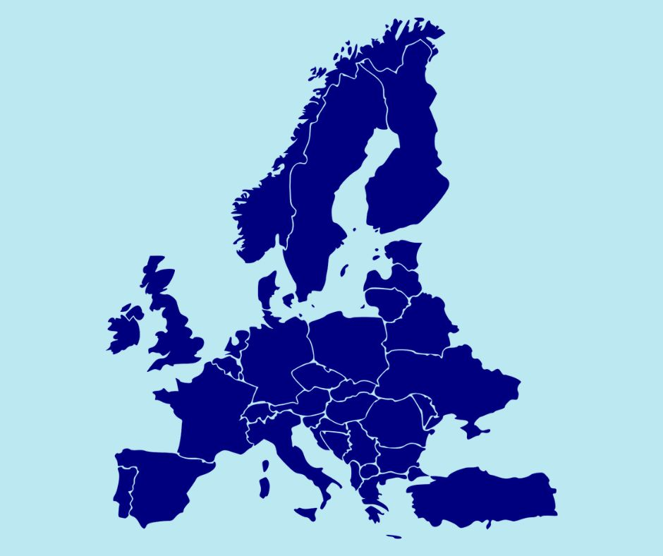

Schnellsuche
Am Anfang deines Atlas findest du eine Weltkarte mit verschiedenen „Bilderrahmen“. Oft sind diese Rahmen bunt. Daneben stehen Seitenzahlen.
Auf diese Weise gibt dir die Kartenübersicht einen schnellen Überblick darüber, welche Karten im Atlas enthalten sind und wo sie zu finden sind. Wenn du beispielsweise nach einer bestimmten Region, wie Europa oder Afrika, suchst, kannst du in der Kartenübersicht nachsehen.
Das kann dann in etwa so aussehen wie auf dem Beispiel rechts. Hier zeigt dir beispielsweise der gelbe Rahmen, auf welchen Seiten alle Karten zu Europa zu finden sind.

(Quelle: Physical Map of the World, gemeinfrei, Fundstelle)
Übung mit deinem Atlas
Nimm dir deinen eigenen Atlas zur Hand. Suche in der Kartenübersicht nach der Seitenzahl für Karten der folgenden Kontinente. Schlage dann die entsprechende Seite im Atlas auf, um die Karte zu überprüfen.
(Bildquellen: NicholasJudy567, Jarno, lyo, public domain, Fundstelle)

Asien

Australien

Europa